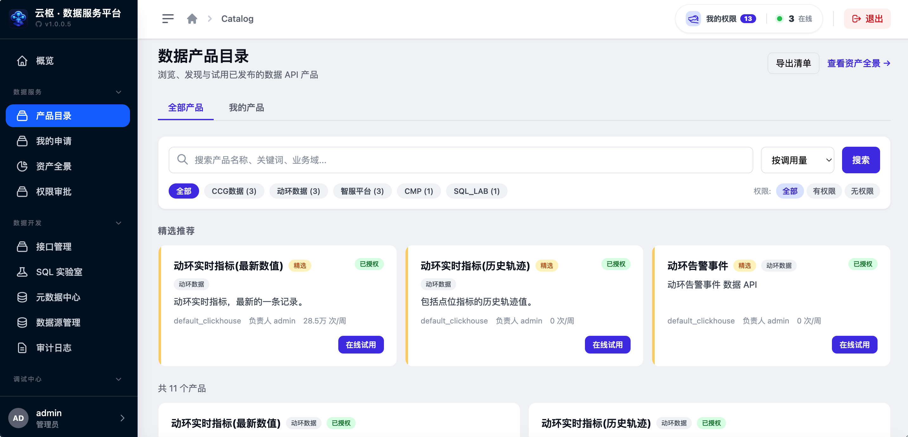
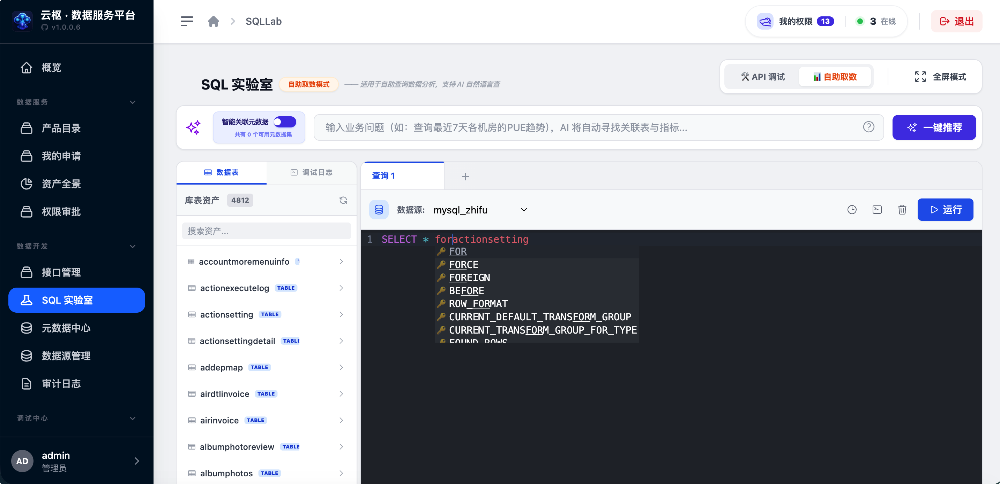
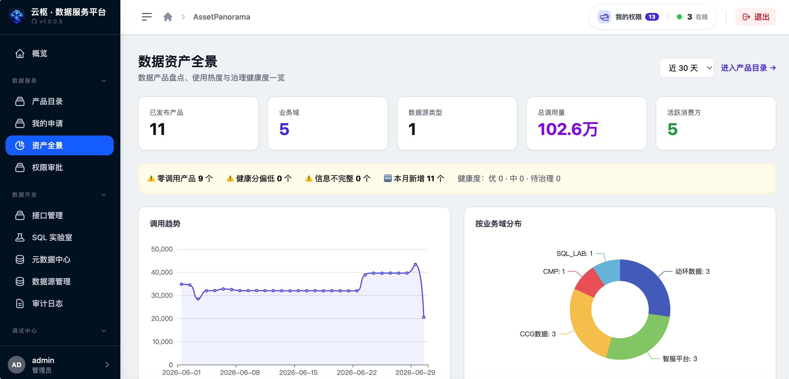
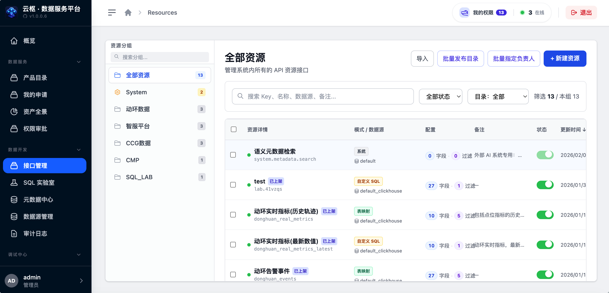
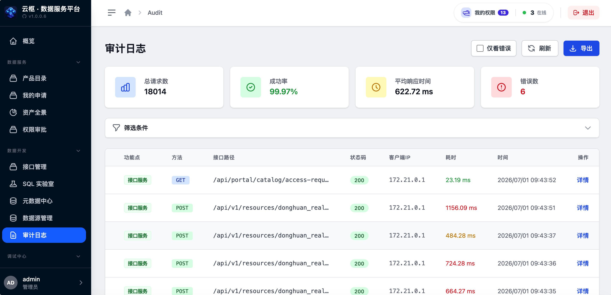

资源服务化
TABLE 零代码映射与 SQL 模板封装双模式，支持 Jinja2 参数分支和统一 DSL 查询入口。
Capabilities
TABLE 零代码映射与 SQL 模板封装双模式，支持 Jinja2 参数分支和统一 DSL 查询入口。
在线编写、调试、AI 辅助生成与修复 SQL，调试通过后可直接发布为生产 API 资源。
统一管理 MySQL、ClickHouse、Oracle 连接，沉淀数据集、表、字段、指标和实体关系。
按业务域浏览 API 产品，支持权限申请、负责人审批、精选推荐和产品生命周期管理。
API Key + Session 双认证，RBAC、数据脱敏、AST/SQL 静态护栏与按天分表审计日志。
24h/7d 调用趋势、Top 排行、分钟级统计聚合和连接池健康状态，支撑持续运营。
Workflow
Screens





Use Cases
把散落在业务库和数仓里的表、SQL 统一封装为规范接口。
通过目录、权限状态和申请审批降低业务用户发现数据的成本。
为智能体平台提供可审计、可授权、可追踪的数据访问层。